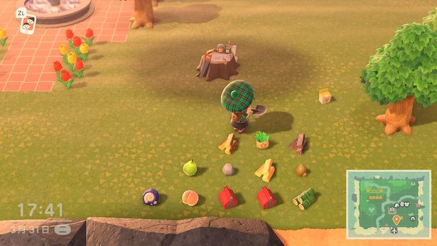
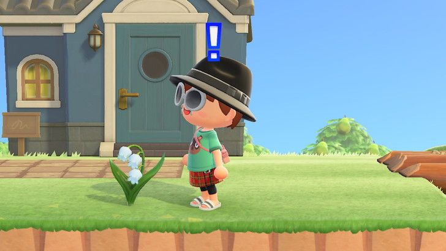

島の評価★5のとり方
しずえの採点のしくみ、★4で止まったときの見直しポイント、最後にチェックリスト
島の評価が★5になると、しずえから「きんのジョウロ」のDIYレシピがもらえて、島にスズランが自然に咲くようになります。ところが★4まではスムーズに上がっても、そこで止まってしまう人がたくさんいます。家具をたくさん置いて、花もいっぱい植えたのに、何度聞いても★4のまま……。
原因はたいてい2つ。1つは、点数が実は2種類に分かれていて、片方だけがんばっても上がらないこと。もう1つは、島にこっそり減点されているものがあること。地面に落ちたもの、雑草、植えすぎた木、同じ家具の固め置きなどです。以下、しずえの採点のしかた、★4で止まったときの見直し方、最後に★5を目指すチェックリストの順で説明します。
01しずえに評価を聞く
案内所が立派な建物になると、しずえがカウンターに座るようになります。話しかけて「島の評価」を選ぶと、いまの島が★いくつかを教えてくれます。
評価は聞いたその瞬間に計算されるので、翌日まで待つ必要はありません。1つのエリアを変え終わるたびに聞きに行くのがいちばん手っ取り早く、今回の変更に効果があったかどうかがその場でわかります。
点数が足りないときは、「花が少ない」「ゴミが多い」など、島に何が足りないかを教えてくれます。ひとりで悩むより、言われたとおりに直すほうがずっと早いです。

案内所の中。右のカウンターの奥にいるのがしずえです
★5を目指す道のりで、最初の大きな関門は★3です。★3になるととたけけが島にライブをしに来てくれて、島クリエイターも手に入ります。川を掘ったり、崖を作ったり、道を敷いたりできるようになり、その後の島づくりはほぼこれ頼みになります。
02点数の計算方法
ゲームでは点数が2種類に分かれています。発展ポイントは施設・住民・家具といった「にぎわい」、自然ポイントは花や草木といった「自然」を計算したものです。★を1つ上げるには両方が同時にラインを超える必要があり、片方がどれだけ高くても、もう片方が足りなければ上がりません。
| 評価 | 発展ポイント | 自然ポイント |
| ★2 | 80以上 | 200以上 |
| ★3 | 160以上 | 270以上 |
| ★4 | 400以上 | 350以上 |
| ★5 | 665以上 | 450以上 |
表を見ると、★4から★5では発展ポイントを400から665まで上げる必要があり、ここがいちばんの大きな壁です。★4以降は外に置く家具に力を入れましょう。
ヒントこれらの数字はプレイヤーがデータ解析で調べたもので、任天堂は公表していません。どこをがんばればいいかの目安にすれば十分で、電卓で1点ずつ計算する必要はありません。
発展ポイントのもと
ベースになるのは施設と住民です。博物館と仕立て屋はそれぞれ15点。住民が10人そろうと、9人のときよりさらに点数が上がります。橋と坂も1つにつき15点で、4〜5か所作ればかなりの点数になります。
いちばん大きいのは外に置く家具です。外に置いた家具は1つずつ点数になり、高価なものほど点数が高く、横幅3マス以上の大型家具にはボーナスもあります。さくは1つあたりの点数はわずかですが、たくさん並べればそれなりの点数になります。
自然ポイントのもと
成長した木とたけは1本1点、低木は1株0.5点です。花は種から咲くまでずっと点数になり、咲いているときがいちばん高くなります。また、外に置いたDIY家具も自然ポイントを少し上乗せしてくれます。
03★4で止まったら、まずこの4つ
家具も花も十分なのに評価が上がらないなら、たいてい減点の要素が足を引っぱっています。次の4つを順番に確認しましょう。
地面に落ちたものを片付ける
地面に置きっぱなしのフルーツやきのえだ、かいがら、釣ったまま放ってあるあきカン・ながぐつ・タイヤは、しずえから見るとどれもゴミです。きちんと置いた屋外家具はゴミにならないので、飾るものはちゃんと置き、使わないものはポケットにしまうか売ってしまいましょう。

フルーツ、きのえだ、雑草が地面に散らばった状態。どれも評価を下げます（画像：T客邦）
雑草を抜く
雑草が多いと、発展ポイントが直接減ります。自分で抜くのが大変なら、園芸店のレイジに草むしりを頼めます。料金は6万ベルだけで、島の雑草が30本以上あれば頼めます。
木を植えすぎない
木は自然ポイントになりますが、植えすぎると逆効果です。木（たけを含む）が約220本を超えると、しずえに「木が多すぎる」と言われて、★5がとれなくなります。念のため、島全体の木は100〜200本におさえておきましょう。
同じ家具を固めて置かない
ゲームは島を8×8の小さなブロックに区切って家具の点数を計算しています。同じブロックにまったく同じ家具をずらっと並べると、多い分は点数にならないどころか減点されます。同じ家具をたくさん置きたいなら、島のあちこちに分けて置きましょう。
注意木と花の点数はおたがいに補い合えます。自然ポイントが足りないときは、木を増やすのではなく、花を多めに植えましょう。
04★5を目指すチェックリスト
以下は、多くのプレイヤーが★5をとったときの島のおおよその状態です。どれも経験から来た目安で、絶対の条件ではありませんが、1つずつそろえていけばたいていは近いところまで行けます。
1. 住民が10人そろっていて、博物館と仕立て屋が建っている。
2. 橋と坂を合わせて4か所以上作っている。
3. 外に家具を200〜300個置いている。種類はなるべく多く、島全体に分散させる。
4. 花を200〜300本植え、木は100〜200本にとどめている。
5. さくを少し立てている。100個くらいで十分。
6. 雑草はすべて抜き、地面に落ちたものも全部片付けている。
7. 1エリア変えるごとにしずえに聞きに行き、言われた弱点を補う。

いしだたみ、さく、花壇、屋外家具。外に置けばどれも点数になります
ヒント家具200〜300個と聞くと大変そうですが、大金は必要ありません。自分でDIYしたもの、釣り大会やムシとり大会の景品、風船を撃ち落として手に入れたものも、外に置けば同じように点数になります。
05★5になったら
きんのジョウロ
★5になると、しずえから「きんのジョウロ」のDIYレシピがもらえます。材料はジョウロ1つときんこうせき1個。きんのジョウロは目の前の3×3、計9マスに一度に水をまけるので、広い花畑の水やりがぐっと速くなります。くろいバラに水をやると、次に咲く新しい花がきんのバラになります。
スズラン
スズランは★5の島にだけ自然に咲く花です。咲くかどうか、どこに咲くかは運しだいで、崖の上に咲くこともよくあります。この花は摘めないので、場所を変えたいときはスコップで株ごと掘り起こして植え替えるしかありません。花は収納にもしまえるので、気に入ったスズランを見つけたら掘り起こしてしまっておくのも手です。

★5のあと崖のふちに咲いたスズラン。摘めないので株ごと掘り起こします（画像：T客邦）
注意★5になったあとで島を大きく作り変えると、評価が★4に下がることがあり、下がっている間はスズランが新しく咲きません。大工事の前には覚悟しておきましょう。
06よくある勘違い
家の中の飾りつけは点数にならない。島の評価は外だけを見ています。家の中の飾りつけは、ハッピーホームアカデミーが家につける点数のほうで、島の評価とは関係ありません。
家具は多ければいいわけではない。数はたしかに必要ですが、同じブロック内でダブった家具は減点されます。たくさん置くより、ばらして置くほうが大事です。
木も多ければいいわけではない。上限を超えると★5はとれません。自然ポイントが足りないときは、花を増やすほうが確実です。
変えたあと1日待つ必要はない。評価は聞いたときに計算されるので、変えたらすぐ聞きに行けます。
07アップデートでの変更点
レイジの草むしりサービスはVer.2.0からありますが、Ver.3.0で料金が6万ベルに下がり、雑草が30本以上あれば頼めるようになりました。花を収納にしまえる機能はVer.3.0で追加されたものです。
あつ森 サークル · App Store で「あつ森 サークル」を検索